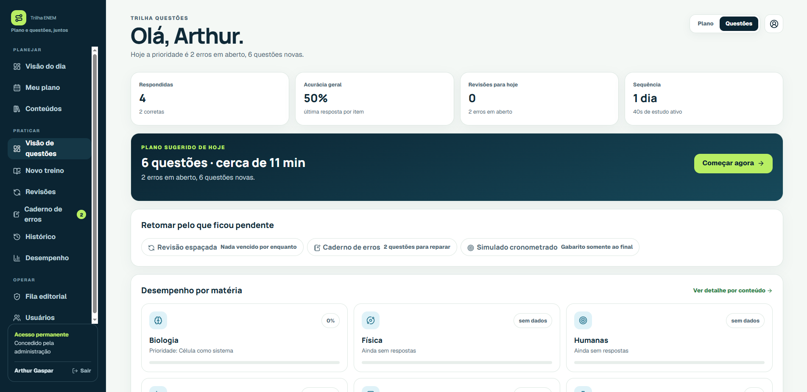

O problema
Preparar-se para o ENEM normalmente exige alternar entre bancos de questões, cronogramas, simulados, anotações e ferramentas de acompanhamento que não conversam entre si.
EdTech · produto digital · 2026
Uma plataforma de preparação para o ENEM criada para concentrar planejamento, resolução de questões, simulados, revisão e análise de desempenho em uma experiência única.
Um projeto que nasceu da ideia de tornar o estudo mais organizado, mensurável e personalizado.
Preparar-se para o ENEM normalmente exige alternar entre bancos de questões, cronogramas, simulados, anotações e ferramentas de acompanhamento que não conversam entre si.
Reunir essas etapas em uma plataforma única, capaz de entender o histórico do estudante e transformar dados de estudo em próximas ações.
O projeto envolve arquitetura do produto, interface, desenvolvimento full-stack, banco de dados, infraestrutura, deploy e evolução contínua da experiência.
Recursos conectados entre si para transformar questões resolvidas em informação útil para o estudante.
O aluno configura sua disponibilidade e preferências para receber uma rotina de estudos distribuída ao longo das semanas.
Sessões podem ser montadas por matéria, tópico, dificuldade, origem, ano e número de questões.
Experiência focada em desempenho, progressão contínua e resultado consolidado ao final da sessão.
Questões erradas e conteúdos pendentes retornam para novas sessões de revisão.
Histórico de respostas, taxa de acertos, evolução e desempenho por conteúdo ajudam a visualizar onde melhorar.
O motor de sessões consulta um banco de questões filtrável e combina os dados com o histórico individual de cada estudante.
A plataforma tenta reduzir ao mínimo o esforço necessário para decidir o que estudar depois.
A Trilha ENEM também funciona como um projeto prático de desenvolvimento e infraestrutura.
Os principais problemas técnicos aparecem justamente na integração entre as diferentes partes do produto.
Manter contratos de dados, RPCs e interfaces sincronizados durante a evolução rápida do produto.
Adaptar uma interface rica em dados, filtros e sessões para telas menores sem perder funcionalidade.
Fazer com que os dados coletados realmente representem o progresso do estudante.
Operar aplicação, banco, serviços e deploys em uma VPS com containers Docker.
O produto está funcional e passa por ciclos constantes de teste e refinamento.
Os principais fluxos de estudo já funcionam de ponta a ponta.
O foco atual está na experiência em celulares, consistência das sessões e correção de comportamentos de borda.
Evoluir recomendações, revisão, relatórios e personalização do plano.
Algumas das telas que compõem a experiência da Trilha ENEM.

Acesse a versão atual da plataforma e acompanhe a evolução do produto.